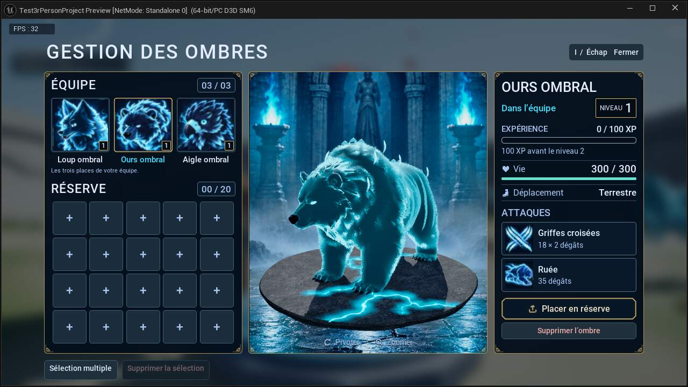
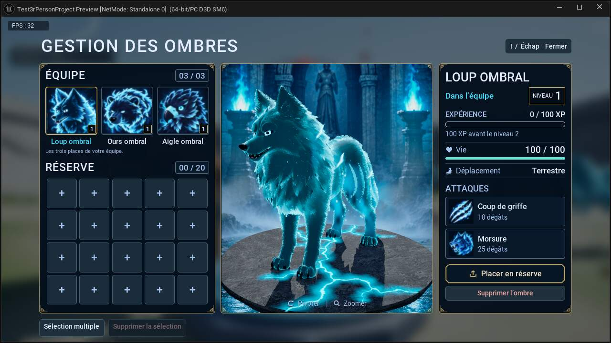
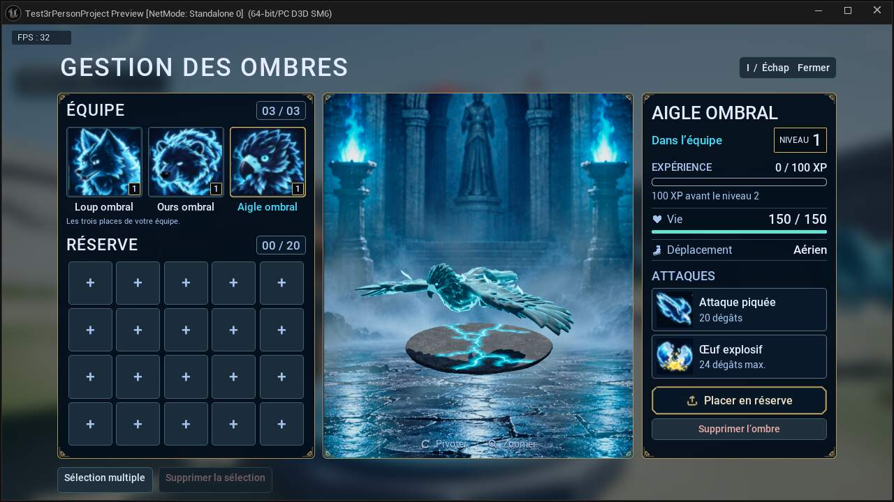
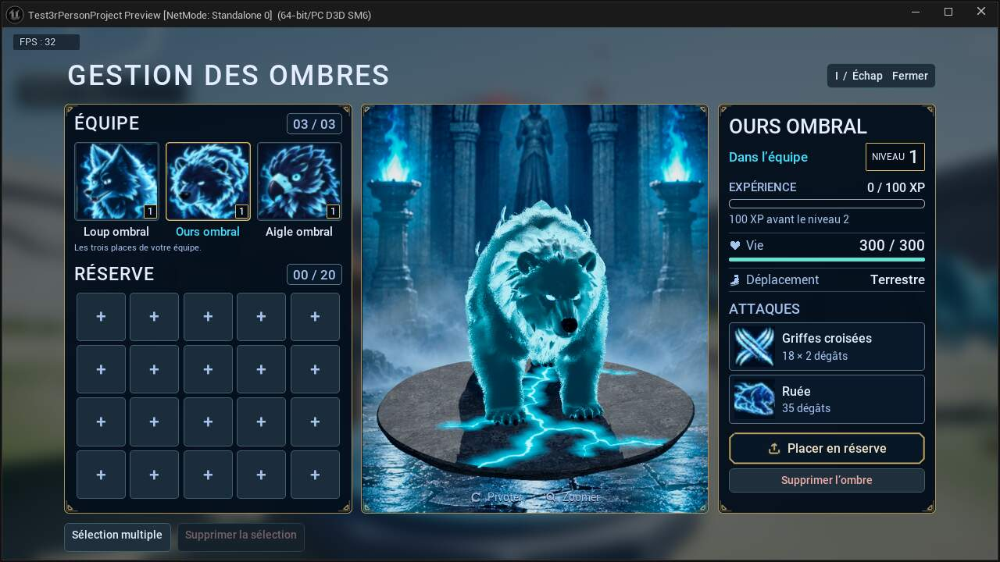
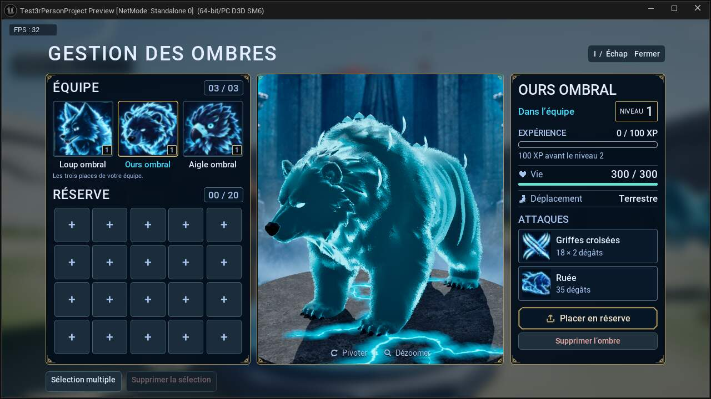
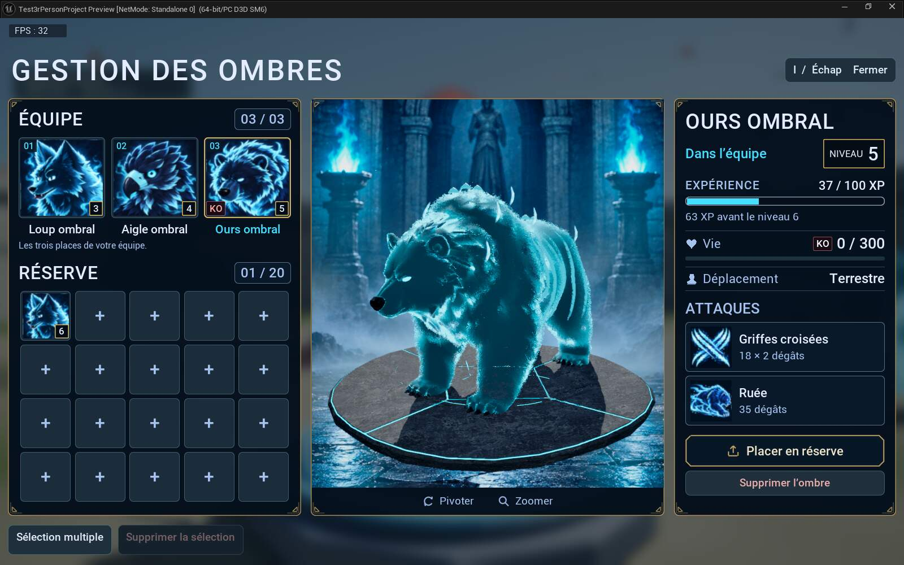
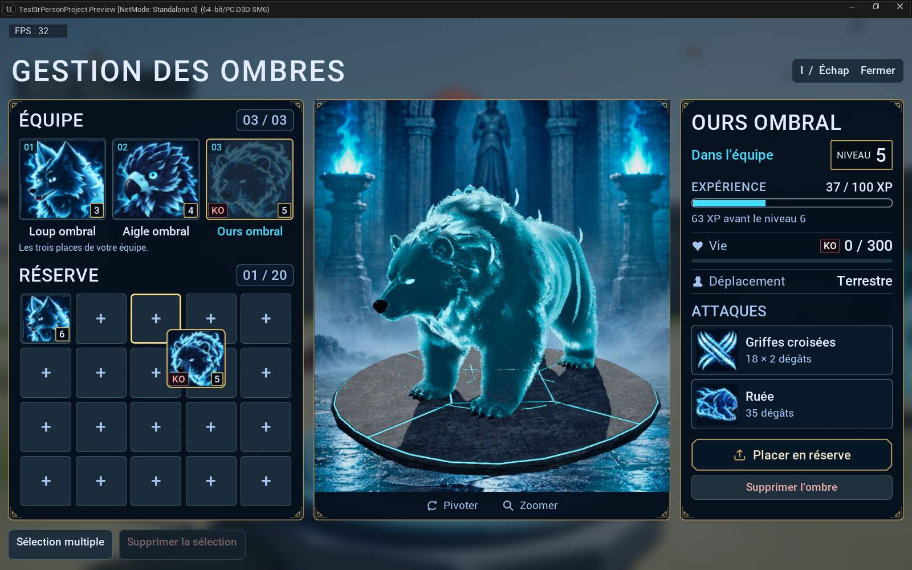

Gestion des ombres
Dans cette page
État courant · V27
Version V27 · 23 octobre 2026. Les précisions ci-dessous constituent l’état courant ; les campagnes et versions précédentes restent consultables dans le volet historique.
Le menu I est commun au solo et au multijoueur : trois places d’équipe, vingt places en réserve, portraits approuvés, niveaux, XP, PV et KO. Glisser-déposer pour déplacer ou échanger ; clic droit pour rejoindre la première case libre de l’autre espace. Équipe pleine, une nouvelle recrue rejoint la réserve. Une collection pleine refuse le recrutement sans dépenser de mana. La suppression simple ou multiple demande confirmation.
Maintenir Pivoter entraîne progressivement la plateforme et le mob ensemble, autour du centre des appuis ; le décor et les lumières restent fixes. Maintenir Zoom + ou Zoom − zoome continuellement ; les boutons sont grisés aux limites. Le cadrage coordonne la crypte et le sujet, sans modifier la taille de l’allié dans le monde. La seule nouvelle chaussure plate est affichée devant Déplacement. Portraits, cadres dorés, badges KO rouges, dégâts compacts, fissures cyan et ambiance de crypte sont conservés.
En multijoueur, le serveur valide les transferts et suppressions de la collection personnelle. Les autres joueurs ne peuvent pas déplacer vos ombres. Les alliés en réserve ne restent pas simulés sur le terrain. Le menu ne met pas la partie réseau en pause. Les identifiants, niveaux, XP et KO sont conservés dans la sauvegarde et lors de la reconnexion. Les animations de l’ours et de l’aigle et les matériaux ombraux utilisent les mêmes assets que le solo.
Organisation, captures et validation V27 · Gestion des ombres
Guide détaillé et historique antérieur à V27
Gestion des ombres
V26 préparée — nouvelle finition
Maintien pour pivoter, zoom + et − désactivés aux limites, boutons encadrés, sélection centrée et chaussure plate revue depuis la référence. Fissures latérales ajoutées ; texture du socle maintenue nette.
Voir les captures natives V26. La version active reste V25h jusqu’au redémarrage autorisé de la partie.
Finitions V25h activées · Solo · I pour ouvrir · 3 places d’équipe + 20 places de réserve
La V25 ajoute les indications KO, affine la fiche et révise le déploiement ainsi que la présentation dans la crypte.
Finitions V25h activées dans l’éditeur habituel : nouveau socle fissuré et halo bleu diffus, commandes superposées à la scène. La galerie présente les trois espèces dans le menu réel. Le niveau habituel est ouvert en solo ; la collection du joueur est conservée.










Les anciennes captures KO et de glisser-déposer ci-dessous proviennent de la campagne V25e ; elles ne représentent pas le nouveau socle V25h.




Voir les trois propositions générées · Origine du décor et de la pierre

Ouverture et invocation
Ouvrir avec I pendant une partie solo. I ou Échap ferme le menu. La partie est en pause pendant la gestion ; les commandes et la caméra sont rendues au joueur à la fermeture.
Si une réanimation, une invocation, un rappel ou un retour est encore en cours, un bandeau annonce que le menu s’ouvrira à la fin. Le jeu continue normalement pendant cette attente : le rituel peut donc se terminer. Appuyer de nouveau sur I annule l’ouverture demandée. Après douze secondes sans fin de transition, la demande est annulée et un message invite à réessayer avec I.
Cette ouverture différée corrige le blocage qui pouvait survenir en ouvrant le menu pendant un rituel : la pause figeait sa progression alors que le déplacement et la suppression attendaient sa fin. L’ancien message d’invocation est effacé à l’ouverture réussie.
Équipe et réserve
Trois places d’équipe en haut à gauche ; vingt places de réserve en bas à gauche, disposées en cinq colonnes et quatre lignes. La réserve désigne ces vingt cases, et non les alliés temporairement rappelés avec T. Les portraits de style animé approuvés V21 restent utilisés.
Les trois grands panneaux bleu nuit sont entourés d’un contour doré discret et continu, avec les mêmes coins arrondis et motifs d’angle. Le cadre de la crypte suit désormais cet arrondi. Les capitales espacées blanc bleuté, les textes secondaires bleu doux et les accents cyan/or sont conservés. Roboto Medium et Regular restent les polices du menu, sans contour noir. Le vrai niveau reste flouté autour des panneaux ; la crypte demeure dans le cadre 3D. Les couleurs des portraits et des illustrations d’attaque approuvés restent inchangées.
En V25, le badge en bas à droite du portrait affiche uniquement le nombre du niveau, par exemple « 1 », sur fond noir avec un cadre doré. Une ombre dont les PV sont à zéro garde sa case et porte « KO » en bas à gauche. Son identité, son niveau et son XP restent conservés. Les mêmes indications suivent le portrait pendant le glisser-déposer. Une ombre KO compte toujours dans la capacité occupée.
Les numéros de place « 01 », « 02 » et « 03 » ont été retirés du haut gauche des portraits de l’équipe. Le chiffre du niveau en bas à droite, le badge KO et les indicateurs de sélection ou de transition sont conservés.
Déplacer et échanger
Maintenir le clic gauche sur un portrait et le glisser sur une case de l’équipe ou de la réserve. Le portrait et son cadre doré suivent le pointeur ; son emplacement d’origine s’atténue pendant le déplacement. La case visée se souligne pour aider au dépôt.
Une case vide reçoit l’ombre ; une case occupée échange les deux ombres. Un dépôt hors des cases ou un déplacement refusé fait revenir visuellement le portrait à son emplacement d’origine en 0,28 seconde, sans modifier la collection. Le bouton principal affiche « Placer en réserve » pour une ombre de l’équipe et « Placer dans l’équipe » pour une ombre de réserve. Il utilise la première place libre de destination. Son fond bleu nuit, son contour doré à coins coupés et son icône de flèche sortant d’un plateau reprennent la référence choisie. Il est désactivé si la sélection est vide ou en transition.
La V25 conserve la taille réelle enregistrée de l’allié au déploiement. Les allers-retours entre équipe et réserve ne multiplient plus cette taille par celle du Blueprint. Pour trouver une place au sol, le déploiement essaie la position de formation puis plusieurs points autour du joueur, en tenant compte du sol, de la navigation et du volume réel de la créature. Si aucun emplacement n’est libre, l’échange est refusé sans remplacer la collection.
Les niveaux, l’XP, la vie et les dégâts sont conservés. Une ombre KO peut être rangée, échangée ou supprimée après confirmation ; un déplacement ou un rechargement ne la réanime pas automatiquement. Le glisser-déposer reste suspendu pendant la sélection multiple et lorsqu’une confirmation de suppression est ouverte.
Recrutement
Lorsque les trois places d’équipe sont occupées, la prochaine ombre rejoint une case libre de réserve à la fin du rituel. Le coût en mana, le choix de l’espèce et l’animation existante sont conservés. Équipe et réserve pleines, le recrutement est bloqué. La capacité reste de vingt-trois ombres au total.
Fiche et scène 3D
La fiche de droite reprend le fond et la bordure du badge KO approuvé sur les portraits. Son texte KO blanc est séparé des PV, qui gardent leur couleur normale. Les vignettes et leur version déplacée restent inchangées. Le sous-texte d’équipe est « Les trois places de votre équipe. », car une place occupée par une ombre KO n’implique pas sa présence sur le terrain. Cette retouche est validée dans V25c.
Sélectionner une case affiche le vrai modèle 3D, le niveau, les PV actuels et maximaux, l’XP acquise et son seuil, l’XP restante avant le niveau suivant, ainsi que les deux attaques et leurs dégâts. La fiche indique si l’ombre appartient à l’équipe ou à la réserve.
La présentation de la V24 est conservée : badge de niveau doré, expérience avant la vie, jauge d’XP cyan de 18 unités avec bordure claire, valeur à droite et XP restante dessous. La V25 ajoute un cœur à gauche de « Vie » et une petite botte bleu doux à gauche de « Déplacement ». La botte reprend la silhouette inclinée de la référence, avec la pointe vers la gauche. La vie reste une ligne jade discrète de 8 unités. Pour une ombre KO, la fiche affiche « KO » avec ses PV à zéro et une jauge vide. Le déplacement indique « Aérien » ou « Terrestre ». Les séparateurs, la rubrique « ATTAQUES », les boutons et les messages en pied de menu restent en place.
La scène garde la proposition 1 choisie par Florian, « Crypte ombrale » : arches de pierre, statue au fond, deux braseros bleus et brume basse. Ce décor remplace la galaxie V23 depuis la V24. Le fond a été généré sans créature ; le sujet reste le véritable modèle du jeu animé au repos. Le nouveau socle V25h est une pierre sombre usée, parcourue de fissures irrégulières et ramifiées à largeur variable. Un halo bleu ciel diffus suit les creux ; l’ancien cercle lumineux autour du bord est retiré. Le loup et l’ours reposent sur le socle ; l’aigle garde son vol au repos.
Le cadrage vise le centre vertical de la créature et s’adapte aux proportions du cadre. La V25 fait tourner uniquement le modèle lors du glissement : la crypte, le socle et l’éclairage restent fixes. La molette rapproche ou éloigne le modèle et le décor de façon coordonnée. Deux boutons superposés au bas de la scène complètent ces gestes, sans bandeau séparé : « Pivoter » tourne le mob de 30 degrés ; « Zoomer » passe à une vue rapprochée puis devient « Dézoomer » pour retrouver le cadrage initial. Le zoom change le champ de vision et le cadrage du fond, sans changer la taille réelle du mob. L’image occupe toute la surface du cadre. Une légère ombre native des textes et icônes améliore leur lecture sur le sol bleu, sans bandeau ajouté. Les caches de paupières utilisés pour la mort de l’aigle restent exclus de sa copie de présentation afin de laisser voir ses yeux.
La V25 limite la déformation des flammes à leur zone lumineuse ; les piliers, les vasques et les dalles restent stables. Deux couches de brume se déplacent lentement à des vitesses différentes, avec des reflets bleus plus visibles au sol. Ces effets restent animés pendant la pause. Ils proviennent du matériau du fond : ce ne sont ni des particules simulées ni des reflets calculés par ray tracing.
Le nom en double au-dessus du modèle, les aides « glisser » et « tourner », le titre « Fallen Necromer » et les boutons de lecture des attaques restent retirés. Seuls les noms et dégâts des attaques sont consultables. La copie 3D sert de présentation : elle ne réanime pas une ombre KO dans la partie. Son éclairage propre ne constitue pas une comparaison colorimétrique avec la carte.
Icônes d’attaque : chaque attaque possède désormais une illustration carrée de 80 unités dans une carte de 96 unités de hauteur, à gauche du nom et des dégâts. Les dégâts utilisent Roboto Regular en taille 16, plus discrète que le nom. Le loup utilise Coup de griffe et Morsure ; l’ours Griffes croisées et Ruée ; l’aigle Piqué et Œuf. Les six images gardent leurs couleurs d’origine, sont chargées une seule fois à l’ouverture et restent limitées à 512 pixels dans Unreal. Elles ne lancent aucune animation au clic. Les deux attaques et les boutons de gestion tiennent entièrement dans la fiche.
Les six illustrations sources sont conservées dans Art/Gestion_Ombres_V25/Attaques : Loup_Griffe.png, Loup_Morsure.png, Ours_Griffes_Croisees.png, Ours_Ruee.png, Aigle_Pique.png et Aigle_Oeuf.png. Leur origine est décrite dans Generation.txt. Les textures de destination sont /Game/UI/ShadowRosterV24/AttackIconsV25/T_<nom>. La petite galerie montre les illustrations générées ; les grandes captures natives V25h montrent leur intégration réelle dans le menu.
Illustrations d’attaque — sources V25c


Supprimer une ou plusieurs ombres
Pour une seule ombre, la sélectionner puis utiliser « Supprimer l’ombre », placé sous le bouton de transfert dans la fiche à droite.
Pour plusieurs ombres, activer « Sélection multiple » en bas à gauche, puis cliquer sur les portraits voulus. Une coche identifie chaque choix et un compteur indique leur nombre. « Supprimer la sélection », juste à droite de « Sélection multiple », devient disponible lorsqu’au moins une ombre est sélectionnée. « Terminer la sélection » quitte ce mode.
Les deux actions ouvrent une confirmation précisant le nombre d’ombres concernées. Annuler ou Échap ne retire rien. « Oui, supprimer » les retire définitivement de la collection avec leur progression. Une invocation encore en cours reste protégée contre la suppression.
Sauvegarde et coût du menu
La collection solo conserve le fichier Saved/SaveGames/Ombres_Solo_V23.sav et sa copie de récupération .bak. La V25 fait évoluer le format interne vers la version 2 en conservant les fiches existantes, y compris les ombres KO. Une ombre KO n’est pas recréée vivante au chargement. Les rappels avec T conservent leur état ; une créature cachée pendant son rituel ne devient pas un allié rappelé par erreur.
Une migration ciblée répare les tailles de loups qui correspondent exactement à l’ancien agrandissement répété. Avant cette réparation, le fichier original est conservé dans une copie suffixée .before-scale-v25, distincte de la sauvegarde tournante .bak. Les tailles personnalisées qui ne correspondent pas à ce défaut ne sont pas remplacées. La mise à jour n’efface ni la collection ni sa progression.
Les vingt ombres de réserve restent des données stockées, sans vingt IA supplémentaires dans la carte. Le menu crée une seule copie visuelle, capturée au maximum à trente images par seconde, puis la détruit à sa fermeture. La résolution s’adapte au cadre, avec une largeur de 768 à 1 280 pixels et une hauteur de 512 à 1 536 pixels. Le détail LOD 0 et le chargement des textures de présentation concernent cette copie temporaire.
Le socle V25h utilise un seul maillage temporaire de 7 593 triangles, dont 2 025 pour le halo local aux fissures, répartis en trois sections. Il ne reçoit ni collision, ni simulation, ni nouvelle lumière. La texture de pierre existante et un masque de fissures de 1 024 pixels alimentent ses matériaux ; aucun nouveau système de particules ni traitement par image n’est ajouté. Six anciens assets sont préservés pour permettre un retour. Le matériau de crypte réutilise l’image de fond existante. Ces retouches ne constituent pas un nouveau benchmark des performances du jeu.
Vérifications
FINITIONS V25h VALIDÉES ET ACTIVÉES — La compilation a réussi. Le comparatif local du socle passe 16 contrôles ; l’affectation automatique du nouveau socle et de ses matériaux dans la version native V25h passe 19 contrôles. Les captures du loup, de l’ours et de l’aigle ont été inspectées à 1 280 × 720 : fissures ramifiées et halo visibles, ancien anneau retiré, commandes superposées et boutons lisibles. Les changements du socle restent limités à la copie de présentation. L’éditeur habituel a été relancé et son module V25h chargé a été vérifié : L_Base_Nexus, hors partie, un joueur, aucun asset ni carte non enregistré. La collection du joueur et sa copie de récupération restent identiques à la sauvegarde prise avant activation.
Les campagnes fonctionnelles V25a restent valables avec leur portée d’origine : 199 contrôles sur les transferts, les cycles, les retours et la réanimation réelle ; 33 sur le rechargement KO ; 38 sur la migration d’une copie du profil existant. Quatre identifiants, les PV, l’XP et les statistiques ont été conservés, avec deux loups ramenés des échelles 9,1125 et 6,075 à 1,2 et des transferts réels d’ours/aigle réussis. Le profil original du joueur est resté inchangé. Ces campagnes ne sont pas présentées comme réexécutées sur V25h.
Interface V25e : 277 contrôles réussis par de vrais événements de pointeur Slate. L’ours de la troisième place est déplacé vers la réserve puis ramené ; les cases occupées sont échangées ; les dépôts hors case sont annulés avec retour animé. Ces gestes sont vérifiés avec un ours vivant puis KO, en conservant les identifiants et statistiques. Les widgets affichés confirment les niveaux, badges KO, cœur, botte et vie fine. Les captures à 1 600 × 1 000 montrent les trois cadres dorés, les cartes d’attaque agrandies et les boutons sans débordement. Cette campagne précède les finitions visuelles V25f/g/h ; elle n’est pas présentée comme rejouée en totalité sur V25h.
Présentation V25a : 139 contrôles réussis sur les trois espèces, la rotation du seul modèle, le zoom coordonné, les yeux de l’aigle et les animations au repos. Trois contrôles complémentaires du matériau ont réussi : à temps figé, le fond reste pixel pour pixel identique après une rotation de 90 degrés ; les captures temporelles montrent la brume en mouvement et les reflets bleus renforcés. Les captures natives de présentation V25a sont conservées dans Art/Gestion_Ombres_V25/Preview. La galerie courante utilise les captures finales V25h du menu. Les interactions et états KO ont été vérifiés séparément dans Art/Gestion_Ombres_V25/UI. Le fixture KO de l’interface est construit explicitement ; les morts et réanimations réelles ainsi que la persistance sont couvertes par les bancs de gestion distincts.
Présentation V25e : 73 contrôles natifs réussis sur les matériaux du socle, les vrais modèles, les animations au repos et les API de rotation/zoom. Dix contrôles supplémentaires utilisent les boutons affichés : Pivoter tourne le seul sujet de 30 degrés ; Zoomer modifie le champ de vision et SceneZoom de façon concordante ; Dézoomer restaure le cadrage ; la taille du mob et les transformations de la crypte restent inchangées. Rapports Validation_Lueur_Zoom_Native_E.json et Validation_Preview_Buttons.json. Le banc du transfert utilise désormais le véritable index souris de Slate ; son premier essai avec l’index zéro est conservé comme diagnostic du banc, pas comme défaut gameplay.
Commandes superposées V25g : les trois clics réels Pivoter, Zoomer et Dézoomer passent 10 contrôles. Le seul sujet tourne de 30 degrés ; le zoom et SceneZoom restent concordants ; Dézoomer restaure le cadrage ; la taille réelle et les transformations de la crypte restent inchangées. La capture à 1 280 × 720 montre les commandes directement sur la scène et l’absence de 01/02/03 sur les portraits. La légère ombre de contraste et les fissures ramifiées du socle sont les finitions V25h, contrôlées séparément.
Transfert V25f : 26 contrôles réussis avec de vrais clics Slate sur le bouton principal. Un ours KO effectue un aller-retour équipe/réserve sans changer d’identifiant ni de statistiques ; les libellés suivent sa place et une case vide ne provoque aucune action. Les 19 contrôles de présentation et captures V25f restent conservés avec leur date.
Socle V25h : le comparatif de 16 contrôles a d’abord utilisé une substitution locale dans une session isolée V25g. Les 19 contrôles natifs vérifient ensuite le chargement automatique des nouveaux assets sur les trois espèces, les matériaux, l’animation au repos, le socle fixe pendant la rotation et le zoom sans changement de taille du mob. L’éclairage existant est conservé. Rapports Validation_Socle_Naturel_H_Comparatif.json et Validation_Socle_Naturel_H_Natif.json ; import et préservation des six assets antérieurs dans Import_Socle_Naturel_H.json.
Résultats historiques V24 : 73 contrôles de glisser-déposer et 48 contrôles de présentation réussis sur V24g. Le portrait mobile, l’ours en troisième place, les échanges, la conservation des identifiants et le retour animé hors case avaient été vérifiés. Les 35 contrôles de gestion V24a, 40 de caméra V24 et 37 de réanimation V24c sont des campagnes antérieures, conservées dans Saved/CodexTools/ShadowMenuV24. Ils ne sont pas annoncés comme réexécutés sur V25.
Réanimation V24c : le bref retour de texture normale signalé par Florian n’avait pas été reproduit sur les 3 380 échantillons observés. Un défaut d’ordre d’initialisation avait été confirmé puis corrigé : le relais prépare la pose, le pelage, les ornements et les masques avant de rendre le corps visible. Le Blueprint corrigé a été enregistré sur disque ; l’ancien verrouillage de fichier est résolu. Les rapports d’origine et la copie récupérable restent conservés.
Les essais de gameplay et d’interface utilisent une session isolée et leur propre TestCollection.sav. La migration a été contrôlée sur une copie du profil existant, sans modifier le fichier actif du joueur. Le compteur à 45 FPS visible dans certaines captures V24 est le plafond volontaire de cette session, pas un diagnostic des performances normales. Aucun nouveau benchmark global ni essai multijoueur n’est annoncé pour cette mise à jour.
Icônes V25e : 69 contrôles réussis. Les six images affichées résolvent la bonne texture selon l’espèce et l’attaque ; elles sont carrées, placées à gauche du texte et limitées à 512 pixels. Cliquer sur chacune ne lance aucune animation. Les trois fiches à 1 600 × 1 000 ont été inspectées avec leurs cartes agrandies et leurs dégâts Regular 16. Rapport Validation_Attack_Icons.json. Les couleurs des images n’ont pas été modifiées.
Aigle V25c : 18 contrôles réussis sur la seule copie de présentation. La section de brume qui produisait une forme gênante sous l’aigle est masquée sur ses trois niveaux de détail ; les flammes, les côtes lumineuses, les yeux, le duvet et l’animation de vol au repos sont conservés. L’aigle présent dans la carte garde ses sections d’origine. Rapport Validation_Aigle_Brume.json ; captures dans Art/Gestion_Ombres_V25/Reflet_Aigle/Correction.
Portée
Solo d’abord, conformément au choix de Florian. Le menu n’est pas porté au multijoueur à ce stade. Aucun exécutable distribuable recréé. Git dans Unreal reste désactivé (Provider=None), avec le dépôt et son historique conservés.
Fichiers de référence
Sources V25 : Plugins/AvatarRuntime/Source/AvatarRuntime/AvatarShadow*. Retours récupérables, scripts et rapports : Saved/CodexTools/ShadowMenuV25. Module final compilé, testé et chargé dans l’éditeur normal : UnrealEditor-AvatarRuntime-ShadowMenuV25h.dll. Activation confirmée le 23 octobre 2026, PID 28004, L_Base_Nexus, hors partie et un joueur ; rapports Activation_Finale.json et Preferences_Finales.json. L’activation V25c avait été vérifiée le 23 octobre 2026 après minuit. Les rapports et captures précédents restent conservés avec leurs versions ; les campagnes V25a, V25e, V25f, V25g et V24 gardent leurs dates et portées.
Décor V25 : /Game/UI/ShadowRosterV24/M_CryptBackdrop_V25, préparé par Saved/CodexTools/ShadowMenuV25/animate_crypt.py. Socle courant : /Game/UI/ShadowRosterV24/SM_CryptPlinth_V25h, avec M_CryptStone_V25h, MI_CryptStone et M_CryptHalo_V25h ; masque T_CryptFractureMask_V25h. Les anciens SM_CryptPlinth, M_CryptStone, MI_CryptStone, MI_CryptCrevice, T_CryptStone et M_CryptCrevice_Glow_V25d sont préservés. Le dossier Unreal ShadowRosterV24 est volontairement réutilisé : son suffixe n’indique pas une ancienne copie du modèle.
Référence choisie : Art/Gestion_Ombres_V24/Fond_Crypte/Propositions.png, proposition 1. Fond propre : Crypte_Arriere_Plan.png ; texture de pierre : Pierre_Use_Albedo.png. Origine et briefs de génération dans Generation.txt, dans le même dossier. L’ancien socle et sa source OBJ restent dans Fond_Crypte/Plinthe. Le nouveau socle, ses sources OBJ et son masque utilitaire procédural sont conservés dans Art/Gestion_Ombres_V25/Socle_Naturel_V25h, avec leur provenance dans Provenance.txt. Aucun nouveau concept généré ne remplace cette direction visuelle.
Captures historiques natives V24 : Art/Gestion_Ombres_V24/Preview/Menu_Final_Ours_UI.png, Loup_T0_UI.png, Ours_T0_UI.png et Aigle_T0_UI.png. Les fichiers sans suffixe _UI sont des extractions techniques de la cible de rendu ; ils ne servent pas de référence colorimétrique du menu final. Les visuels V25 de présentation sont dans Art/Gestion_Ombres_V25/Preview : Loup_Default_UI.png, Ours_Default_UI.png et Aigle_Default_UI.png. Les états tournés et zoomés complètent ce dossier. Captures d’interaction et de KO : Art/Gestion_Ombres_V25/UI/KO_Fiche_KO_Troisieme_Place.png, KO_Fiche_Vivante_Avec_Ours_KO.png et KO_Portrait_En_Deplacement.png. Rapport du vrai glisser-déposer : Saved/CodexTools/ShadowMenuV25/Validation_Drag.json.
Les sauvegardes initiales restent sous Saved/CodexTools/ShadowRosterV23. Les corrections caméra, épée et ours précédentes sont conservées. Un retour à une version précédant V23 nécessite aussi de restaurer BP_AvatarCharacter.uasset, sauvegardé avant les deux raccords de recrutement.
Captures natives finales V25h : Art/Gestion_Ombres_V25/Socle_Naturel_V25h/Validation/Loup_Apres_H_Natif_UI.png, Ours_Apres_H_Natif_UI.png et Aigle_Apres_H_Natif_UI.png ; Ours_H_Tourne45_Natif_UI.png et Ours_H_Zoom_Natif_UI.png montrent la rotation et le rapprochement. Les captures V25f restent dans Finitions_F et celles V25e dans Attaques/Validation. Les illustrations d’attaque sources de 1 254 × 1 254 pixels sont intactes ; textures Unreal BC7, groupe UI, 512 × 512, mipmaps et filtrage trilinéaire. Import attesté dans Import_Attack_Icons.json ; provenance dans Art/Gestion_Ombres_V25/Attaques/Generation.txt.
73 contrôles de glisser-déposer V24g · 35 contrôles de recrutement et gestion V24a · Retour animé observé dans V24a · 40 contrôles caméra · 37 contrôles de réanimation · 48 contrôles de présentation V24g · Relais enregistré

Portraits ombraux et références · Corrections combat et caméra V22 · Capacité et reprise V23
26 contrôles du bouton de transfert V25f · 10 contrôles des boutons de l’aperçu V25e · 73 contrôles natifs de présentation V25e · 19 contrôles des captures finales V25f
Les niveaux, PV, statistiques et l’ours KO des captures sont des données de test isolées, distinctes de la collection du joueur.
16 contrôles du comparatif local du socle · 19 contrôles natifs V25h · Import du socle et anciens assets préservés · Provenance du nouveau socle · 10 contrôles des commandes superposées V25g
Activation finale V25h vérifiée · Préférences solo et collection préservées